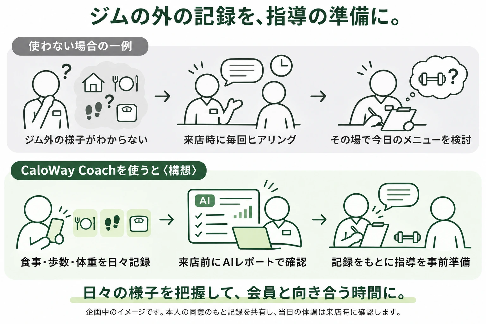
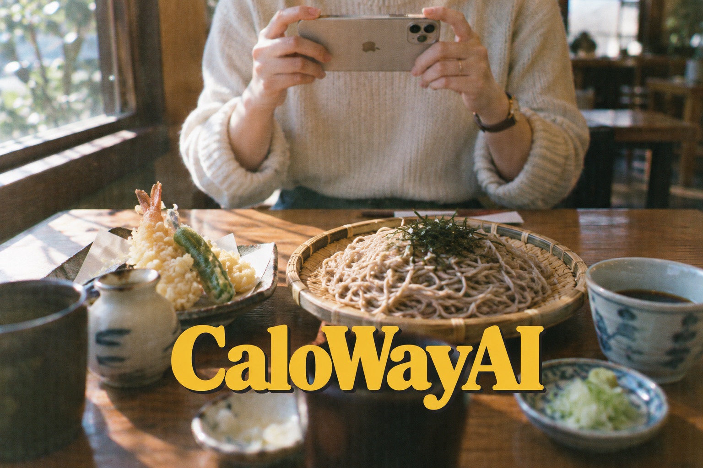
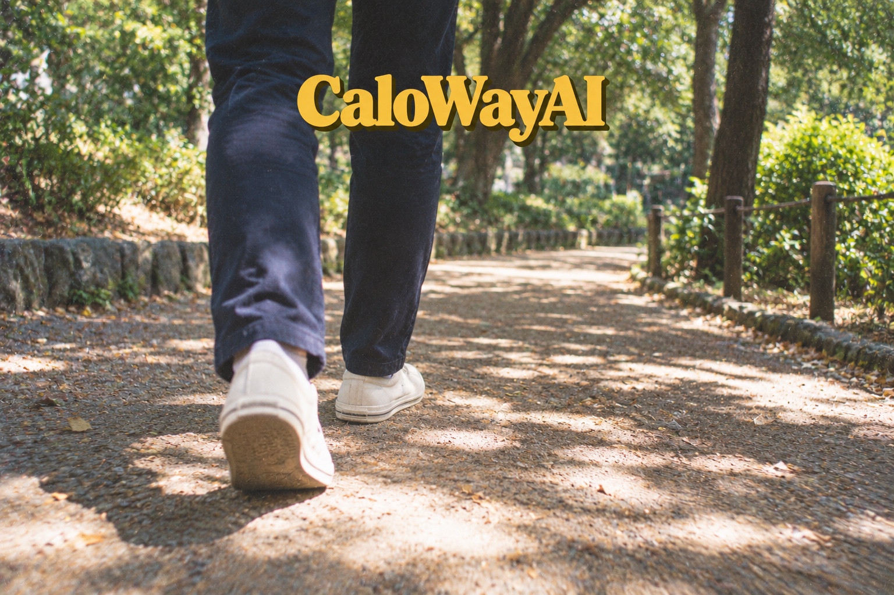
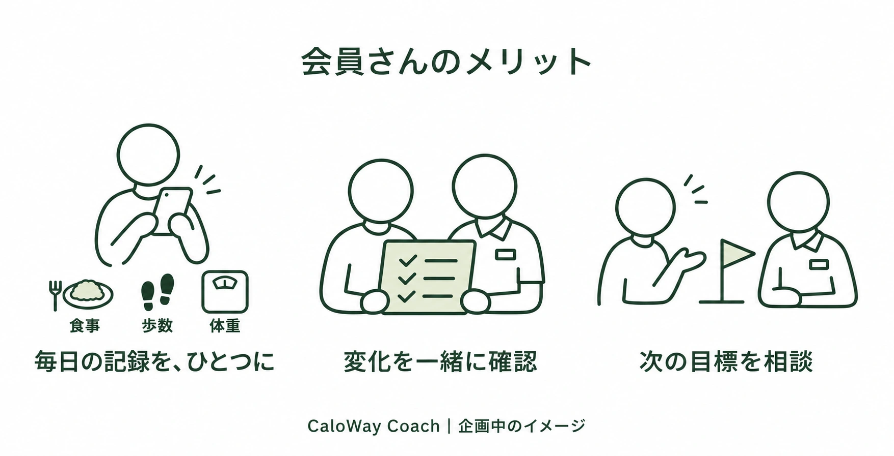
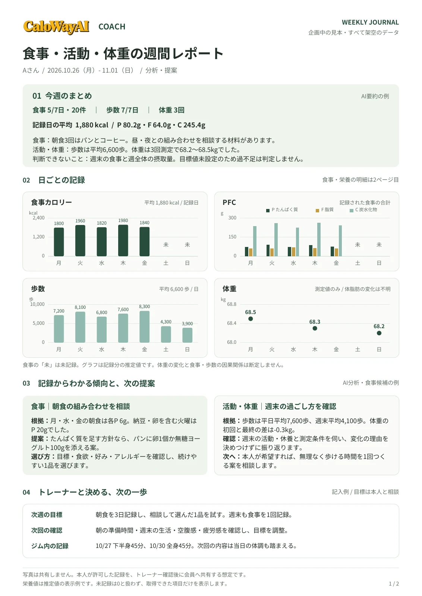
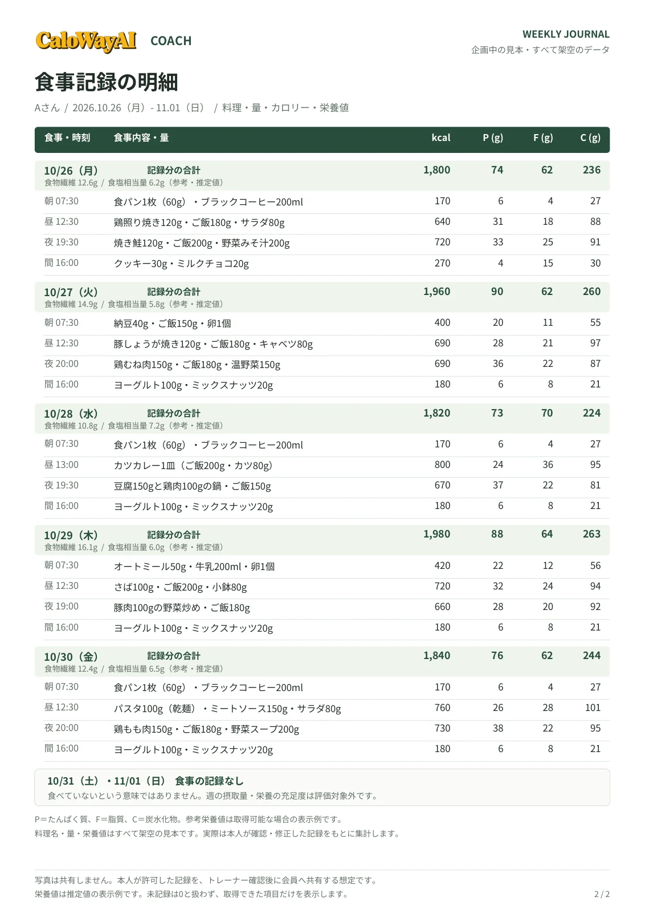

いつものアプリで記録
食事を撮り、体重を記録。個人のアカウントと記録は、本人のものとして使い続けられます。
利用者ごとの記録確認、週次レポート、指導メモをひとつに。
会わない日の食事や活動を記録から確認し、面談前の準備と日々のフォローを支える、食事・運動サポート事業者向けの管理サービス
CaloWay Coach〈仮称〉を企画しています。
匿名回答OK・お申し込みではありません。
機能・料金は検討段階です。ご意見を開発に反映します。

WHO IT IS FOR
パーソナルジム、パーソナルピラティス、食生活改善サービス、エステサロン、栄養相談サービス、ダイエット・食事コーチング。
対面でもオンラインでも、利用者の生活習慣を継続してサポートする方に向けた企画です。
01 / FOR YOUR SUPPORT
会わない日の食事や活動がわからず、面談や来店のたびにヒアリングし、その場でサポート内容を考える。日々の記録を事前に確認できれば、その方に合った助言やトレーニングを準備しやすくなります。

本人が共有に同意した記録をもとに、担当者が指導を準備する構想です。当日の体調や気になる点は、面談・来店時に確認します。
すべて企画中の機能です。現場のご意見をもとに、使いやすさや必要な機能を検討します。
ABOUT CALOWAY AI
CaloWay AIは、食事写真からAIがカロリー・PFCを推定し、体重や歩数も記録できる個人向けアプリです。ジム通いの有無にかかわらず、自分のペースで利用できます。


個人向けアプリは提供中／事業者向けの共有・管理機能は企画中。
AIの栄養情報は推定値です。有料機能は月額390円（税込）、事業者の管理料金とは別料金です。
02 / KEEP IT PERSONAL
事業者からアプリをご案内し、希望する利用者さんと連携。日々の記録を、面談・来店時の振り返りやオンラインでのフォローに活かす流れを想定しています。

食事を撮り、体重を記録。個人のアカウントと記録は、本人のものとして使い続けられます。
招待コードなどから連携。共有先・項目・期間を本人が選び、共有を停止できる設計を検討中です。
AIは記録の整理を補助し、目標や指導は担当者が判断。Webの専用画面から利用する想定です。
03 / WHAT WE ARE PLANNING
利用者さんがアプリに記録し、担当者がWebで確認。日々の管理から振り返りまで、次の3つの機能を検討しています。
本人が共有を許可した食事内容・量・カロリー・PFCなどの推定栄養値、歩数・体重を一覧や日別グラフで確認する構想です。食事写真は担当者には共有しません。
事業者のメリット：食事や活動の様子を面談・来店前に確認し、当日に聞きたいことや助言の準備に活かせます。
日別グラフと食事明細をもとに、食事・活動・体重の傾向、食事候補、次回確認したいことをAIが整理。A4・2枚程度で共有できる詳細レポートを検討しています。未記録や推定値を区別し、担当者が確認・修正して利用者に共有する想定です。
事業者のメリット：1週間分を最初から読み返す負担を減らし、次の指導で話すポイントを整理できます。
目標や前回の助言、相談・トレーニングの内容を記録し、利用者向けの振り返り文案をAIが作成。担当者が確認・修正して共有する想定です。
事業者のメリット：「前回何を話したか」を確認しやすくし、フォローの文章をゼロから考える手間を減らせます。
上記はすべて企画中です。歩数などの連携範囲・方法も検討段階です。AIは記録の整理を補助し、推定値や記録不足を区別します。指導内容は担当者が判断します。現在のアプリから記録が自動共有されることはありません。
04 / WEEKLY JOURNAL
1週間の要点と、提案の根拠になる食事明細をひとつに。担当者が確認して利用者と共有する、A4・2枚の見本です。


写真は共有せず、食事内容と数値を共有。未記録の日は0として扱いません。食物繊維・食塩相当量などは、取得できる場合の表示例です。
レポート見本をPDFで見る企画中のサンプルです。数値・食事・コメントはすべて架空。PDFはパーソナルジムでの活用例で、実際の管理画面ではありません。
05 / PLANNED PRICING
まずは5人まで、事業者側の月額0円で始められるプランを検討中。全プランで基本機能は共通で、管理する人数に合わせて選べる構想です。以下は需要調査のための予定価格で、現時点での申込・契約・課金は行っていません。
予定プラン / FREE
無料 月額0円
管理できる人数 5人まで
予定プラン / STANDARD
¥4,980 / 月（税込）
管理できる人数 30人まで
予定プラン / PRO
¥9,800 / 月（税込）
管理できる人数 100人まで
すべて企画中の機能・税込の予定価格です。価格・機能・提供時期は変更する可能性があります。スタッフ数・店舗数の上限などの詳細は、正式提供前に明示します。
06 / BEFORE YOU ANSWER
事業者向けサービスは企画中です。このページは需要調査を目的としており、申込・予約・契約ではありません。個人向けCaloWay AIは提供中です。
はい。パーソナルピラティス、食生活改善、エステサロン、栄養相談、ダイエット・食事コーチングも対象です。個人・オンラインで活動する方や、今後サポートを始めたい方のご意見も募集しています。
連絡先の記入と今後の連絡への同意は任意です。同意された範囲でのみ、追加ヒアリングやサービス案内・導入のご相談をご連絡します。匿名でも回答できます。
サービスの需要、優先する機能、料金の検討に使います。個人や店舗を特定できる回答を公開することはありません。利用者さんの個人情報や健康情報は入力しないでください。
LET’S BUILD IT TOGETHER
どんなサービスを提供していますか。日々、何に困っていますか。
「使わないと思う」というご意見も、開発の大切な判断材料です。